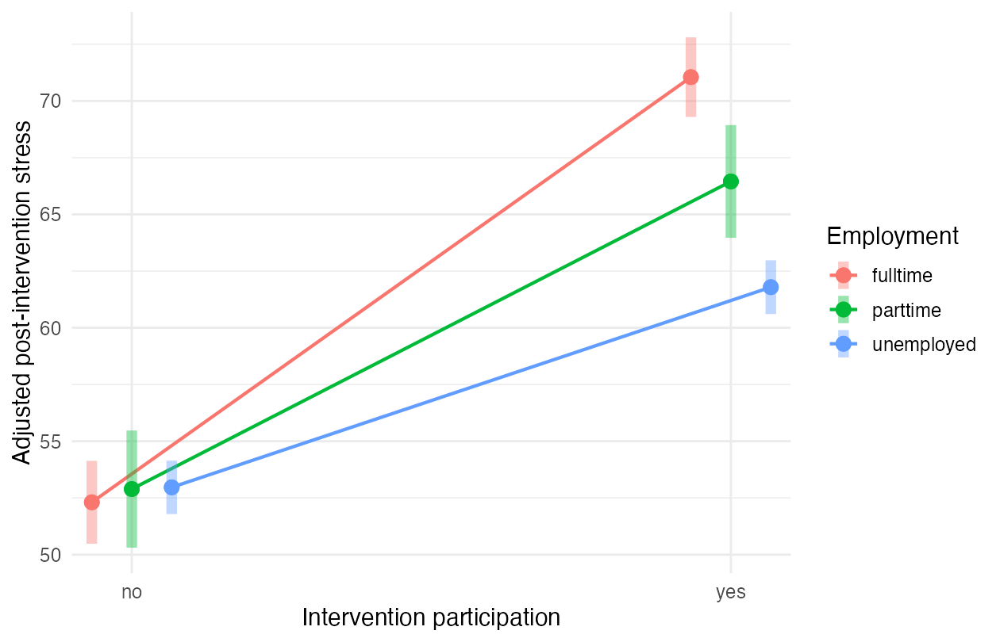

The question, methods & findings
Project overview
I examined whether the association between a mindfulness intervention and parental stress differed by employment status. I used coursework data from 320 parents: 168 participants and 152 nonparticipants. I fitted an ANCOVA with baseline stress, intervention participation, employment status, and their interaction. The interaction improved fit, F(2, 313) = 34.98, p < .001. It added 1.40 percentage points of explained variance.
Results
I estimated higher post-intervention stress among participants in each employment group, after adjusting for baseline stress.
| Employment status | Adjusted difference: participation minus nonparticipation | 95% CI |
|---|---|---|
| Full-time | 18.74 | [16.71, 20.77] |
| Part-time | 13.56 | [10.85, 16.27] |
| Unemployed | 8.82 | [6.82, 10.83] |
I used a Bonferroni adjustment across the three contrasts. R² was 0.9236 for the additive model and 0.9376 for the interaction model. The table comes from intervention_contrasts.csv, recomputed on 8 October 2026.

Limitations
The quasi-experimental design does not identify a causal intervention effect. Baseline adjustment does not remove confounding from unmeasured differences between participants and nonparticipants. I cannot generalize beyond this coursework sample without information about recruitment.
Credits
This was completed by Laura Maria Fetz. The data were supplied for the course.
From the project documentation. Download the overview.
The full study
Original report
Original coursework report. The overview above contains results recomputed in October 2026; some reported confidence limits differ slightly.
Introduction
To examine whether a mindfulness intervention leads to differences in parental stress, I examine data from 320 parents from a quasi-experimental design in which some parents (n = 168) participated in the intervention, and some parents (n = 152) did not. Parental stress was measured at pretest and posttest. Parents’ employment status varied. Table 1 provides more information on the descriptive statistics and can be found in the Appendix.
Model comparisons
I conducted a 2 x 3 factorial ANOVA in which I set the alpha level to 5% (α = .05) to examine differences in parental stress between parents with different employment status who participated in the mindfulness intervention and those who did not. Therefore, I compared an additive model that included stress at pretest, parents’ employment status and participation in the intervention with a model that included an interaction between parents’ employment status and participation in the intervention. The latter model also included stress at pretest, and the lower-order relatives from the previous model. The additive model explained a significant amount of variance, F(4, 315) = 952.20, p < .001, R2 = 92.36%, compared to an intercept-only model, while the model with the interaction explained, F(6, 313) = 783.40, p < .001, R2 = 93.76% of variance compared to an intercept-only model.
The ANOVA comparing these two models showed a significant interaction effect between parents’ employment status and the interaction, F(2, 313) = 34.98, p < .001, ∆R2 = 1.40%. Therefore, I rejected the null hypothesis that the interaction has no effect above and beyond the main effects. Further, the assumption of homogeneity is not violated. This suggests that the differences in parental stress at posttest between parents who participated in the intervention and those who did not depend on parents’ employment status.
Post-hoc tests
I conducted post-hoc tests, using the Bonferroni-adjusted p-value to investigate how the effect of the intervention resulted in differences in parental stress at posttest for different levels of employment status. The results suggest that parental stress was significantly higher at posttest regardless of parents’ employment status. Parents who worked full-time and participated in the intervention (n = 67, M = 86.16, SD = 7.78) showed the greatest increase in parental stress compared to parents with the same employment status who did not participate in the intervention (n = 57, M = 67.60, SD = 7.46), MDiff = 18.74, t(313) = 22.23, p <. 001, 95% CI [16.71, 20.80], the standardized effect (1.01) was large. Parents who worked part-time and participated in the intervention (n = 39, M = 43.97, SD = 6.98) also had significantly higher values of parental stress at posttest, than those who worked part-time but did not participate in the intervention (n = 31, M = 30.61, SD = 6.78), MDiff = 13.56, t(313) = 12.05, p <. 001, 95% CI [10.85, 16.30], the standardized effect (0.73) was medium. Parents who were unemployed and participated in the intervention (n = 62, M = 59.58, SD = 7.53) showed the smallest increase in parental stress compared to those who were unemployed and did not participate in the intervention (n = 64, M = 50.16, SD = 7.71), MDiff = 8.82, t(313) = 10.58, p < .001, 95% CI [6.82, 10.80], the standardized effect (0.48) was small. To illustrate the differences in parental stress I have plotted the interaction in Figure 1, which can be found in the Appendix.
Conclusion
The report aimed to test whether a mindfulness intervention resulted in differences in parental stress. Pairwise comparisons showed that the intervention had iatrogenic effects for all levels of employment status. Those who worked full-time showed the greatest increase in parental stress, followed by those who worked part-time. Unemployed parents showed the smallest increase in parental stress after the intervention.
Appendix
Intervention | Employment Status | Stress at Pretest | Stress at Posttest | ||||
|---|---|---|---|---|---|---|---|
n | M | SD | n | M | SD | ||
Yes | Unemployed | 62 | 46.45 | 5.00 | 62 | 59.58 | 7.53 |
parttime | 39 | 29.64 | 4.57 | 39 | 43.97 | 6.98 | |
fulltime | 67 | 60.82 | 5.20 | 67 | 86.16 | 7.78 | |
No | Unemployed | 64 | 45.95 | 4.98 | 64 | 50.16 | 7.71 |
parttime | 31 | 29.81 | 4.72 | 31 | 30.61 | 6.78 | |
fulltime | 57 | 60.96 | 4.27 | 57 | 67.60 | 7.46 | |
Overall: | 320 | 48.28 | 12.74 | 320 | 59.98 | 18.54 | |
Scroll the table to see all columns.
Note: Participants are divided by employment status and whether they received the intervention or not.
Note: The linear prediction refers to parental stress measured at posttest.